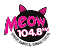

| 
Radio Today Broadcasting, is the radio division of the India Today Group, forges ahead in the Indian FM Radio space with Six stations (Delhi, Mumbai, Kolkata, Amritsar, Patiala and Jodhpur). Radio Today’s strategic analysis of the existing programming content in the cluttered undifferentiated radio space has motivated it to create a ‘Targeted Mass’ value offering for India. Radio Today has dared to be different in its content offer and appeal.
Meow 104.8 FM is India’s first engagement based radio and is clearly positioned as India’s First Just for Women Radio Station. This makes Radio ‘the platform’ for women to express and open their hearts out. Radio no more remains just a passive media among other media but an active option and a friend for ‘empathetic interactivity’ to the new decision maker of the contemporary Indian economy – the Woman. We inform, we entertain, we befriend, we discover, we look ahead, we challenge, we love, we listen, we talk, we sing – We “Meow”
The content is interesting and arresting where no issue important enough for the woman of today is a taboo. A wide range of issues are discussed and the anonymity of radio as a medium encourages women to speak their minds and open their hearts without inhibitions. Meow 104.8 FM has given a new dimension to interaction with the women in urban India of today, becoming synonymous with ‘sharing and conversation’ and is less about music (unlike other FM channels in the radio space) and more about belonging to a community - "the Meow family"
With Meow 104.8 FM women are getting a voice of their own and claiming their rightful share and space under the sky.
Music and talk will find a very healthy blend in the presentations and provide the discerning advertiser more focused platforms within our offerings to maximize their investments on radio. |